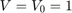
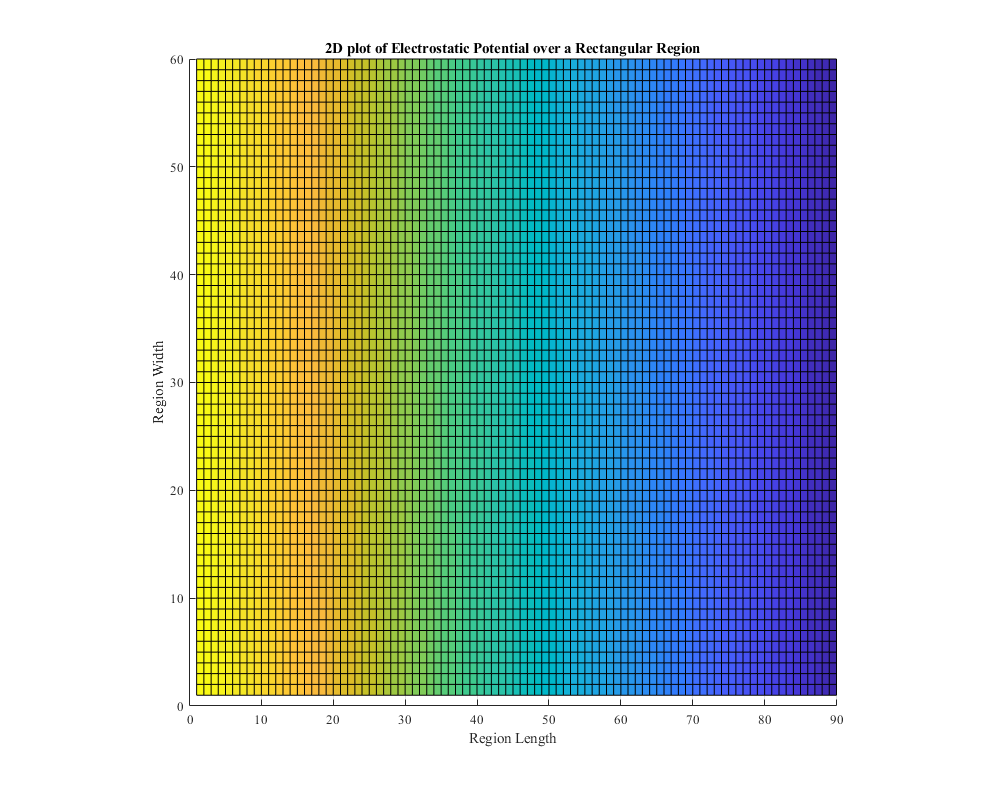
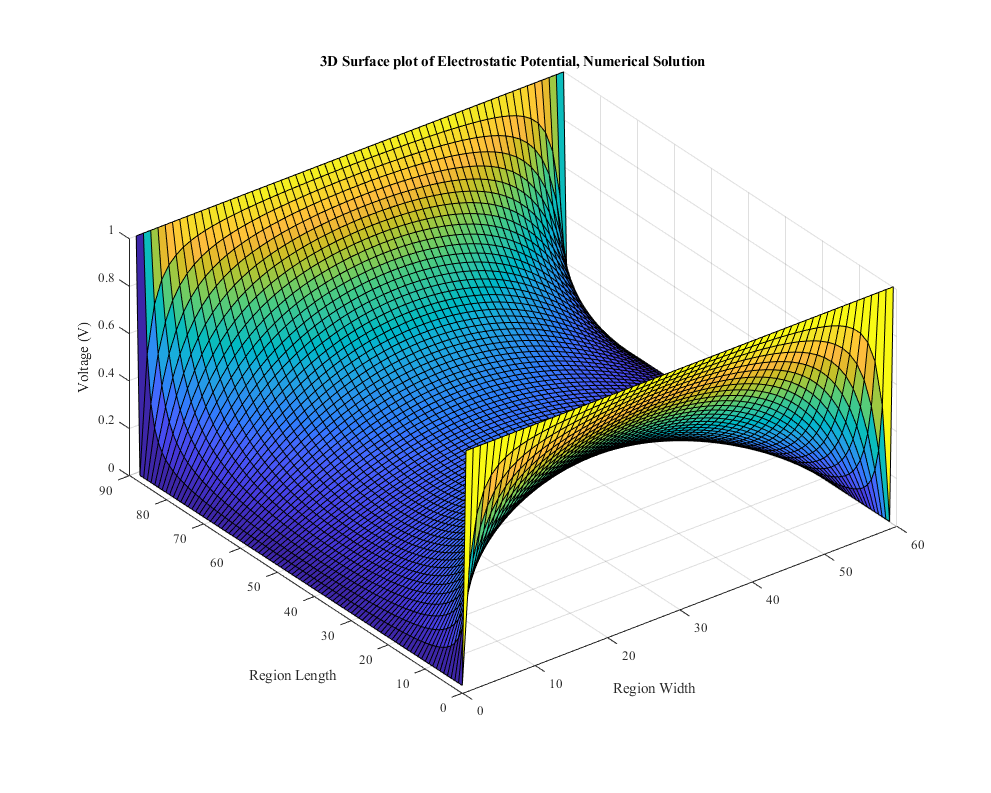
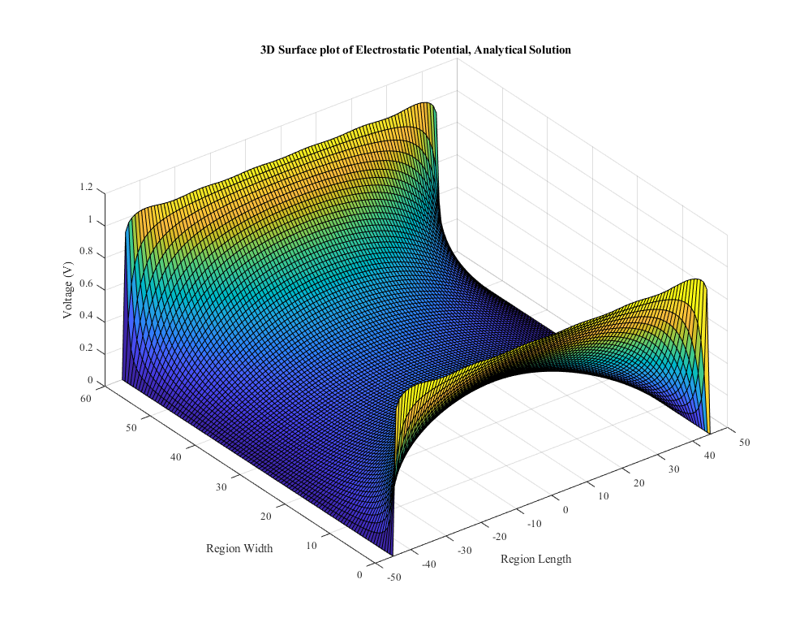

Elec 4700 Assignment 2
Contents
Finite Difference Method for Solving Laplace
Keegan Mauger 101042551
Section 1: Electrostatic Potential in a Rectangular Region
Using Laplace's equation by the finite difference method, an electrostatic potential problem was to be solved. The problem was modelled by an orthogonal resistor network in a region of W by L, choosen to be 90 by 60 for this problem. By using a mesh of resistors, boundary conditions and intrusions became easier to model.
Using the matrix form GV=F, the electrostatic potential in the rectangular region was solved using .
Section 1a: and
For this problem, the boundary conditions were set such that  at the left region boundary, and at the right region boundary. The y-axis boundary conditions were not set. This case was then solved, with the code and results shown below. Note that the region dimensions are taken to be unitless.
clear all close all clc set(0,'DefaultFigureWindowStyle','docked'); % Solving V=V0 @ x=0 and V=0 @ x=L in region LxW % Implement funtion 'pbaspect' to fix Z aspect ratio L = 90; W = 2/3 * L; V0 = 1; fMesh = 1; % Mesh factor nx = fMesh*L; ny = fMesh*W; G = sparse(nx*ny); %V = sparse(nx,ny); F = sparse(1,nx*ny); La = linspace(0,L,nx); Wa = linspace(0,W,ny); for i = 1:nx %Iteration through length for j = 1:ny %Iteration through width n = j + (i-1)*ny; if i == 1 % x=0 BCs G(n,:) = 0; G(n,n) = 1; F(n) = 1; elseif i == nx % x=1 BCs G(n,:) = 0; G(n,n) = 1; F(n) = 0; %F(n)=0 sets z at final width to 0 else nxm = j + (i-2)*ny; nxp = j + (i)*ny; nym = j-1 + (i-1)*ny; nyp = j+1 + (i-1)*ny; G(n,n) = -(4); G(n,nxm) = 1; G(n,nxp) = 1; G(n,nym) = 1; G(n,nyp) = 1; end end end % figure(1) % spy(G) V = G\F'; Vmap = zeros(nx,ny); for i = 1:nx for j = 1:ny n = j + (i-1)*ny; Vmap(i,j) = V(n); end end figure(1) surf(Vmap) pbaspect([1 1 0.5]) view(90,270) title('2D plot of Electrostatic Potential over a Rectangular Region') xlabel('Region Width') %Axis swapped due to view change, named correctly ylabel('Region Length') zlabel('Voltage (V)') saveas(gcf,'Figure1')
Results
On the plot, the colourmap represents the voltage of the region. As expected, the voltage begins in the region at 1V and linearly decreses over the length to zero volts.
Section 1b: and
The problem was solved using both numerical and analytical approaches. First, the problem was solved using the numerical method, shown below.
clear all clc % Solving V=V0 @ x=0 and V=V0 @ x=L in region LxW % Implement funtion 'pbaspect' to fix Z aspect ratio L = 90; W = 2/3 * L; V0 = 1; fMesh = 1; % Mesh factor nx = fMesh*L; ny = fMesh*W; G = sparse(nx*ny); %V = sparse(nx,ny); F = sparse(1,nx*ny); La = linspace(0,L,nx); Wa = linspace(0,W,ny); for i = 1:nx %Iteration through length for j = 1:ny %Iteration through width n = j + (i-1)*ny; if i == 1 % x=0 BCs G(n,:) = 0; G(n,n) = 1; F(n) = 1; elseif i == nx % x=1 BCs G(n,:) = 0; G(n,n) = 1; %F(n) = 0; %F(n)=0 sets z at final width to 0 % COMMENT BELOW FOR 1a F(n) = 1; %F(n)=1 sets z at final width to 1 elseif j == 1 % y=0 BCs nxm = j + (i-2)*ny; nxp = j + (i)*ny; nyp = j+1 + (i-1)*ny; G(n,n) = 1; elseif j == ny % y=1 BCs nxm = j + (i-2)*ny; nxp = j + (i)*ny; nym = j-1 + (i-1)*ny; G(n,n) = 1; % COMMENT ABOVE FOR 1a else nxm = j + (i-2)*ny; nxp = j + (i)*ny; nym = j-1 + (i-1)*ny; nyp = j+1 + (i-1)*ny; G(n,n) = -(4); G(n,nxm) = 1; G(n,nxp) = 1; G(n,nym) = 1; G(n,nyp) = 1; end end end V = G\F'; Vmap = zeros(nx,ny); for i = 1:nx for j = 1:ny n = j + (i-1)*ny; Vmap(i,j) = V(n); end end figure(2) surf(Vmap) pbaspect([1 1 0.5]) title('3D Surface plot of Electrostatic Potential, Numerical Solution') xlabel('Region Width') ylabel('Region Length') zlabel('Voltage (V)') saveas(gcf,'Figure2')
Discussion
The results above are for a region with a mesh size equal to the length and width, meaning that each increase by 1 in the position axis corresponds to 1 calculation. Increasing or decreasing the mesh size results in a different resolution of equations, which in turn results in a different solution, as discussed below.
Next, the problem was again solved, using an analytical approach. The analytical solution results and discussion are displayed below.
clear all clc % Solving V=V0 @ x=0 and V=0 @ x=L in region LxW % Implement funtion 'pbaspect' to fix Z aspect ratio L = 90; W = 2/3 * L; V0 = 1; nx = 100; ny = 100; La = linspace(-L/2,L/2,nx); Wa = linspace(0, W, ny); V = zeros(nx,ny); Vs = zeros(nx,ny); n = 1; f = 0; figure(3) for n=1:2:210 for i=1:nx for j = 1:ny V(i,j) = (4*V0/pi)*... ((1/n)*(cosh(n*pi*La(i)/(W))/cosh(n*pi*(L/2)/(W)))*... sin(n*pi*Wa(j)/(W))); end end Vs = Vs + V; surf(La,Wa,Vs) pbaspect([1 1 0.5]) pause(0.01) end title('3D Surface plot of Electrostatic Potential, Analytical Solution') xlabel('Region Length') ylabel('Region Width') zlabel('Voltage (V)') saveas(gcf,'Figure3')
Discussion
Seen in the analytical plot, the results are similar, but differences do occur at the boundary conditions where the analytical solution produces a "wavy" peak. This similarity is due to the numerical solution having a suffcicent resolution. The optimal point to stop the analytical solution would be based on the difference in errors of the current iteration and the previous iteration, where the error becomes smaller with each successive iteration of the formula. This can then be compared to a user defined accuracy, where when the analytical error becomes smaller than the user defined value, the solution would stop.
As shown in "test.m" provided with this report, if the resolution is decreased the solution becomes increasing distorted, and likely becomes irrelevant. A higher resolution, appropriately, results in a better solution, however a balance occurs between processing time of larger resolutions and increasingly small differences in solution quality.
